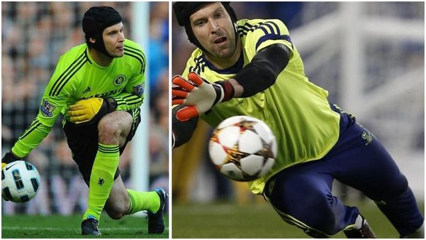
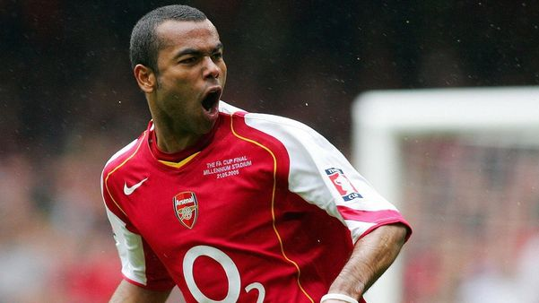
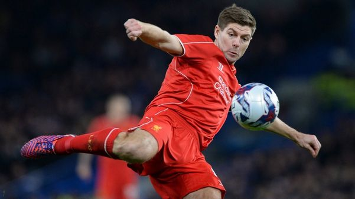
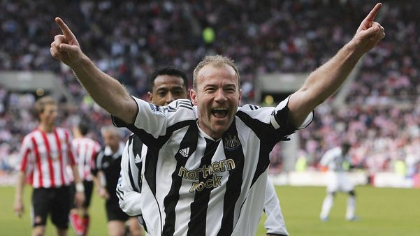
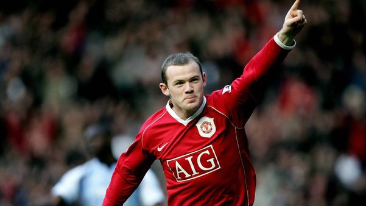
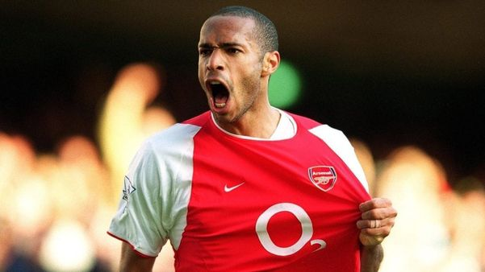

Hall Of Fame
| Player | Country | Club | Records | Player Video |
|---|---|---|---|---|
| Petr Cech  |
Czech Republic | Arsenal & Chelsea | Most Premier League clean sheets to date (202 matches), Most Premier League clean sheets (162 appearances for Chelsea), and Most Premier League clean sheets in a single season (24 games in the 2004-05 season) |
|
| Ashley Cole  |
England | Arsenal & Chelsea | The English full-back is the most title-winning, having made 107 appearances for the England national team between 2001 and 2014 Ashley Cole was a key player in the Arsenal club known as the "Indomitable" and undefeated throughout the entire 2003-04 season. |
|
| Steven Gerrard  |
England | Liverpool | Most matches as captain of Liverpool (473) and top scorer of Liverpool in Champions League competitions with 30 goals. |
|
| Alan Shearer  |
England | Newcastle United | Newcastle United's all-time top scorer with 206 goals , Premier League's all-time top scorer with 260 goals , Premier League's all-time top scorer with 56 goals scored from a penalty kick , and Premier League Golden Boot in three consecutive seasons From 1994 to 1997 |
|
| Wayne Rooney  |
England | Manchester United | Rooney is not only Manchester United's top scorer of all time with 253 goals scored for them but also England's all-time top scorer with 53 goals Rooney is also one of the only English footballers to score over 200 goals in the Premier League |
|
| Thierry Henry  |
France | Arsenal | Arsenal's all-time top scorer with 228 goals Most goals for the French national team (51) |